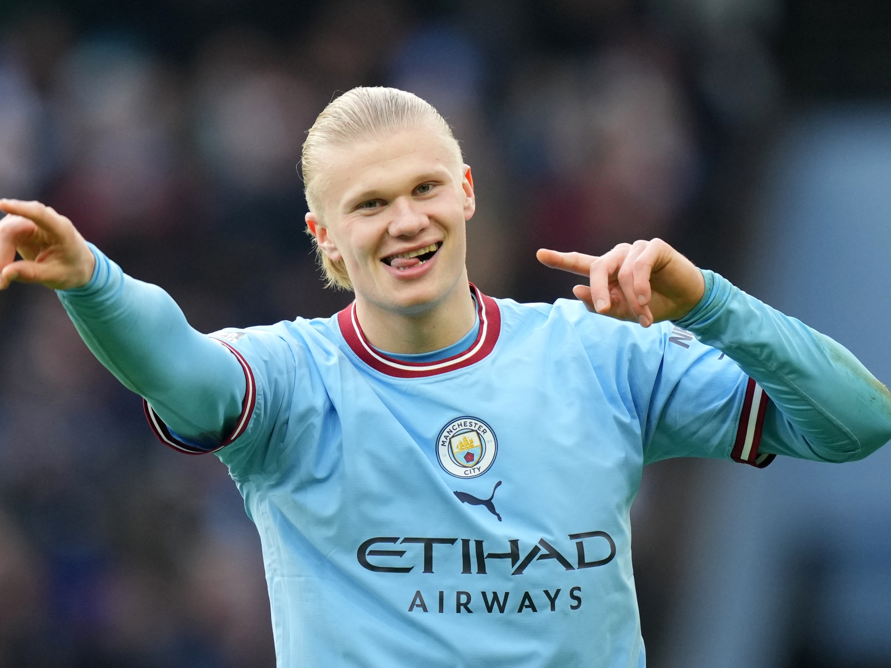
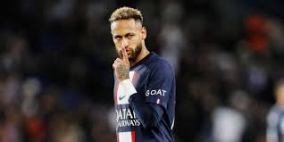
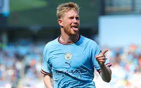
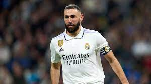
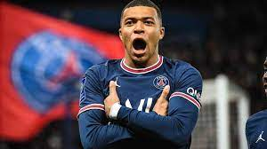
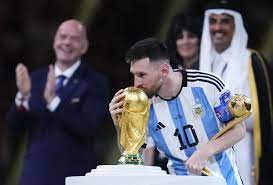

TOP 8 MEJORES JUGADORES DE FUTBOL DE CHAMPIONS LEAGUE (en mi opinión)
Este es un listado de los 8 mejores jugadores en la actualidad que vimos en esta temporada de Champions League, aclaro que este es mi propio criterio...COMENZEMOS.

El 3° máximo goleador en competiciones UEFA (83) y en la Champions (76), detrás de Cristiano Ronaldo y Messi, pretende volver a brillar como en la temporada 2022/2023 tratando de volver a entrar en lideres de goleo y asistencias.

El mejor delantero y el máximo goleador (10 tantos) de la última temporada está llamado a ser una de las grandes figuras del fútbol mundial. Asombra su capacidad goleadora y asustan sus números: el noruego anotó 24 goles en 22 partidos de competiciones UEFA.
Extremos izquierdo, es un jugador muy joven y le falta aún mucho pero por el momento a todos nos sorprende con su velocidad, su potencia de tiro y su vista ya que tiene números altisimos en goles y asistencias y eso que apenas esta comenzando.

No por nada es el dueño de la "10" de París Saint-Germain. Si bien es cierto que perdió la preponderancia que ostentaba años atrás, la llegada de su amigo Messi y la permanencia de Mbappé permiten imaginar que Ney recuperará su mejor versión. El talento no se olvida.
Sus condiciones futbolísticas están fuera de discusión. A eso hay que sumarle la sed de revancha tras haber tenido que abandonar la última final de Champions por un fuerte golpe de Rudiger, que le provocó la fractura de dos huesos de la cara.
Con un equipo en formación, la era Ancelotti se apoya en la experiencia de Luka Modric, Toni Kroos, Casemiro y por supuesto Benzema, quien comparte el 4° lugar en la tabla de goleadores históricos de la Champions
El delantero francés es presente y futuro. El jugador más joven en llegar a los 25 goles en la UEFA Champions League (22 años y 80 días) protagonizó una de las novelas del mercado de pases y finalmente se quedó en PSG, donde están dadas todas las condiciones para poder brillar.
¿Quién se anima a cuestionar el 1° lugar? Algún fanático de Cristiano, quizás. Después de 17 temporadas en Barcelona, Leo dejó su casa y llegó a un París Saint-Germain que tiene todo para levantar finalmente su primera Orejona. Ya con 34 años y la felicidad de haber conquistado la Copa América con la Selección Argentina, el flamante "30" del PSG va por la quinta Champions de su gigantesca vitrina.
Y así es como concluyo mi listado de los mejores 8 jugadores, les agradezco su atención
Puedes ver en este link un poco de lo que son estos jugadores y el torneo de champions:
Clickea Aquí¿Cuál es el precio de estos jugadores?
| JUGADOR | CLUB | PRECIO |
|---|---|---|
| Robert Lewandowski | FC Barcelona | $45 Millones de Euros |
| Erling Haaland | Manchester City | $170 Millones de Euros |
| Vinicius Jr. | Real Madrid | $40 Millones de Euros |
| Neymar Jr. | PSG | $222 Millones de Euros |
| Kevin De Bruyne | Manchester City | $100 Millones de Euros |
| Karim Benzema | Real Madrid | $35 Millones de Euros |
| Kylian Mbappé | PSG | $180 Millones de Euros |
| Lionel Messi | PSG | $50 Millones de Euros |